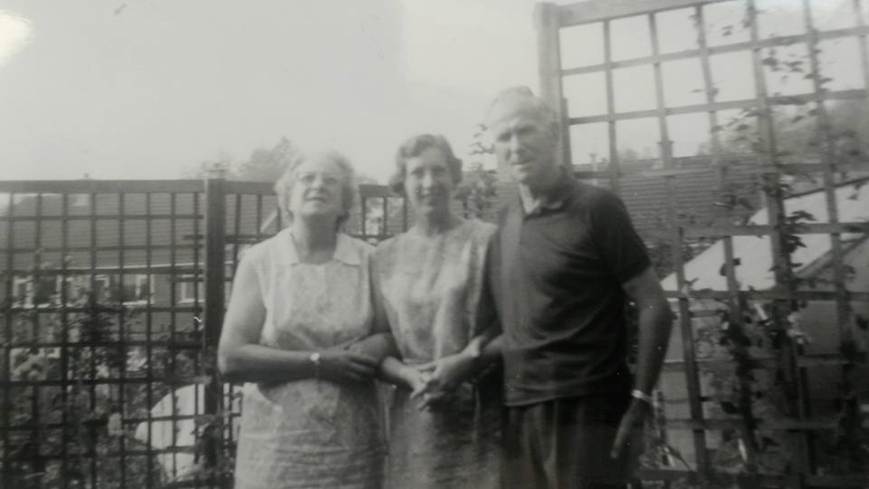
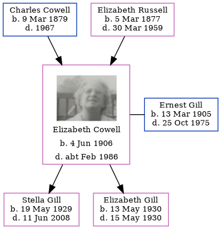

Elizabeth Emma Gill (née Cowell) 1906 - c1986
[ Home ] | [ Calendar ] | [ Surnames Index ] | [ Errors ] | [ Family History ]A dressmaker and the 3rd of 4 children of Charles Cowell (a newsagent) and Elizabeth Russell, Elizabeth Cowell, the first cousin once-removed on the mother's side of Nigel Horne, was born in Woodchurch, Thanet, Kent, England on 4 Jun 19061,2,3,4,5,6,7,8,9 and married Ernest Gill (a bricklayer with whom she had 2 children: Stella Patricia and Elizabeth) in Westhampnett, Sussex, England on 9 Apr 192811.
During her life, she was living at Streele Cottages, Pulborough, Sussex on 2 Apr 191114; at Full Cottages, Highfield Road, Bognor in Westhampnett in 192113 and on 19 Jun 192115; at Conway, 24 Murina Avenue, Bognor Regis, West Sussex, England on 29 Sept 19392 on the same road as her parents who were living at Saint Stephen, Murina Ave; and at 24 Murina Avenue in Bognor Regis in 197512. In 1921 she was working at Miss Pennicott Dressmaker at -, -.
She died c. Feb 1986 in Chichester, Sussex, England4,5,10.
Parents
- Charles Percy was born on 9 Mar 1879
- Elizabeth Ellen was born on 5 Mar 1877
Children
- Stella Patricia was born on 19 May 1929
- Elizabeth was born on 13 May 1930
Citations
- 1911 England Census Online publication - Provo, UT, USA: Ancestry.com Operations, Inc., 2011.Original data - Census Returns of England and Wales, 1911. Kew, Surrey, England: The National Archives of the UK (TNA), 1911. Data imaged from the National Archives, London, England.
- 1939 Register - Findmypast (was the wife of the head of the household)
- England & Wales births 1837-2006 - Findmypast
- England & Wales deaths 1837-2007 - Findmypast
- England & Wales, Death Index: 1984-2005 Online publication - Provo, UT, USA: The Generations Network, Inc., 2007.Original data - General Register Office. England and Wales Civil Registration Indexes. London, England: General Register Office. © Crown copyright. Published by permission of the Cont
- England & Wales, FreeBMD Birth Index, 1837-1915 Online publication - Provo, UT, USA: The Generations Network, Inc., 2006.Original data - General Register Office. England and Wales Civil Registration Indexes. London, England: General Register Office. © Crown copyright. Published by permission of the Cont
- Class: RG14; Piece: 5302; Schedule Number: 22
- Volume: 18; Page: 1736; Register number: 286; Record set: England & Wales deaths 1837-2007; Subcategory: Deaths & burials; Category: Birth, Marriage & Death (Parish Registers); Collections from: United Kingdom;
- Volume: 2A; Page: 1058; Line Number: 178; Record set: England & Wales births 1837-2006; Subcategory: Births & baptisms; Category: Birth, Marriage & Death (Parish Registers); Collections from: United Kingdom;
- Volume: 18; Page: 1736; Register number: 286; Record set: England & Wales deaths 1837-2007; Subcategory: Deaths & burials; Category: Birth, Marriage & Death (Parish Registers); Collections from: United Kingdom; Volume: 18; Page: 1736; Register number: 286; Record set: England & Wales deaths 1837-2007; Subcategory: Deaths & burials; Category: Birth, Marriage & Death (Parish Registers); Collections from: United Kingdom;
- England & Wales, Marriage Index: 1916-2005 Online publication - Provo, UT, USA: The Generations Network, Inc., 2009.Original data - General Register Office. England and Wales Civil Registration Indexes. London, England: General Register Office. © Crown copyright. Published by permission of the Cont
- According to her husband's probate
- 1921 Census Of England & Wales - Findmypast
- 1911 Census for England & Wales - Findmypast (was age 4 and the daughter of the head of the household)
- 1921 Census Of England & Wales - Findmypast (was age 15 and the daughter of the head of the household)
Media
Ernest Victor Gill - Elizabeth Emma Cowell - Stella Gill

Elizabeth Emma Cowell
1939 Register Transcription - TNA-R39-2577-2577A-013-06
1911 Census for England & Wales - GBC/1911/RG14/05302/0043/5
England & Wales births 1837-2006 - BMD/B/1906/2/AZ/000135/178
England & Wales marriages 1837-2008 - BMD/M/1928/2/AZ/000258/028
England & Wales deaths 1837-2007 - BMD/D/1986/2/75524403
Family Tree
Map
Generated by ged2site. Last updated on Jul 3, 2024
Known Issues
Location for 02 Apr 1911 (Streele Cottages, Pulborough, Sussex, England) differs from mother's (Streele Cottages, Billingshurst, West Sussex, England)
Date of residence (2 Apr 1911) differs from mother's in same year (02 Apr 1911)
2 Apr 1911: Not living with either parent in childhood when aged 4
19 Jun 1921: Not living with either parent in childhood when aged 15